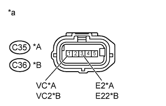

DTC P2431 Secondary Air Injection System Air Flow / Pressure Sensor Circuit Range / Performance Bank1 |
DTC P2432 Secondary Air Injection System Air Flow / Pressure Sensor Circuit Low Bank1 |
DTC P2433 Secondary Air Injection System Air Flow / Pressure Sensor Circuit High Bank1 |
DTC P2436 Secondary Air Injection System Air Flow / Pressure Sensor Circuit Range / Performance Bank 2 |
DTC P2437 Secondary Air Injection System Air Flow / Pressure Sensor Circuit Low Bank 2 |
DTC P2438 Secondary Air Injection System Air Flow / Pressure Sensor Circuit High Bank 2 |
| DTC No. | DTC Detection Condition | Trouble Area |
| P2431 P2436 | Pressure sensor indicates a value below 45.6 kPa (342 mmHg), or higher than 135 kPa (1013 mmHg) (2 trip detection logic). |
|
| P2432 P2437 | While the engine is running, the voltage output of the pressure sensor is below 0.5 V (1 trip detection logic). |
|
| P2433 P2438 | While the engine is running, the voltage output of the pressure sensor is higher than 4.5 V (1 trip detection logic). |
|
| Required Sensors/Components (Main) | Pressure sensor |
| Frequency of Operation | Continuous |
| Tester Display | Description |
| NORMAL |
|
| ABNORMAL |
|
| INCOMPLETE |
|
| UNKNOWN |
|
| 1.CHECK HARNESS AND CONNECTOR (PRESSURE SENSOR - ECM) |
Disconnect the air switching valve connector.
Disconnect the ECM connectors.
Measure the resistance according to the value(s) in the table below.
| Tester Connection | Condition | Specified Condition |
| C35-2 (AIP) - G44-1 (AIP) | Always | Below 1 Ω |
| C35-1 (VC) - C28-16 (VCV2) | Always | Below 1 Ω |
| C35-3 (E2) - C29-7 (E2) | Always | Below 1 Ω |
| C36-2 (AIP2) - G44-2 (AIP2) | Always | Below 1 Ω |
| C36-1 (VC2) - C28-16 (VCV2) | Always | Below 1 Ω |
| C36-3 (E22) - C29-7 (E2) | Always | Below 1 Ω |
| C35-2 (AIP) or G44-1 (AIP) - Body ground | Always | 10 kΩ or higher |
| C35-1 (VC) or C28-16 (VCV2) - Body ground | Always | 10 kΩ or higher |
| C36-2 (AIP2) or G44-1 (AIP2) - Body ground | Always | 10 kΩ or higher |
| C36-1 (VC2) or C28-16 (VCV2) - Body ground | Always | 10 kΩ or higher |
|
| ||||
| OK | |
| 2.CHECK TERMINAL VOLTAGE (VC OF AIR SWITCHING VALVE) |
|  |
Disconnect the air switching valve connector.
Turn the engine switch on (IG).
Measure the voltage according to the value(s) in the table below.
| Tester Connection | Condition | Specified Condition |
| C35-1 (VC) - C35-3 (E2) | Engine switch on (IG) | 4.5 to 5.5 V |
| C36-1 (VC2) - C36-3 (E22) | Engine switch on (IG) | 4.5 to 5.5 V |
| *A | Bank 1 |
| *B | Bank 2 |
| *a | Front view of wire harness connector (to Air Switching Valve Assembly) |
|
| ||||
| OK | |
| 3.REPLACE AIR SWITCHING VALVE ASSEMBLY |
Replace the air switching valve assembly.
| NEXT | |
| 4.CHECK WHETHER DTC OUTPUT RECURS |
Perform the Confirmation Driving Pattern.
| Display (DTC Output) | Proceed to |
| NORMAL (No DTC output) | A |
| ABNORMAL (P2431, P2432, P2433, P2436, P2437 or P2438 output) | B |
|
| ||||
| A | ||
| ||